Gestion de Production
Optimiser · Planifier · Produire
👤 Fehmi ben njima
Plan du cours
01
Fonction production dans l'entreprise
04
Données techniques, GPAO, ERP
Chapitre 1
Fonction production dans l'entreprise
🏭
Entreprise = unité de production
🏭
ENTREPRISE
Organisation combinant des hommes, des moyens financiers et matériels
+
🎯
OBJECTIF
Satisfaire les besoins (produits / services) des clients
=
💰
PROFIT
Réaliser des produits et services en générant du profit
💼 L'entreprise est aussi un centre de répartition des revenus
- Salaires & achats
- Impôts & charges sociales
- Intérêts & dividendes
- Bénéfices non distribués
💸
👥 Un groupement humain
- Personnes aux compétences diverses
- Sources propres de motivation
- Réalisations & satisfaction
🤝
Fonction production
📦
ENTRÉE
- Matières premières
- Composants
- Énergie
➜
⚙️
PROCESSUS
- Moyens : humains, techniques, organisationnels
- Décisions de production : liées aux commandes (fermes ou prévues)
- Objectif : réaliser des produits / services
➜
🚚
SORTIE
- Produits finis
- Services rendus
- Satisfaction client
Fonction production (2)
La fonction production transforme des matières premières et des commandes en produits finis, grâce aux moyens humains, techniques et organisationnels.
📦 Matière première
🧾 Commandes
⚙️ Moyens
🏭 Finis
Fonction production (3)
🔗 Liens avec les autres fonctions
🛒
Achats — matières, outillages
🔧
Maintenance — investissements, travaux neufs
🚛
Logistique — ordonnancement
📐
Conception — concurrent engineering
📋
Méthodes — industrialisation
📣
Commercial & marketing — commandes
🔬
R&D — nouveaux produits, nouveaux procédés
💰
Comptabilité, finance — contrôle de gestion
L'environnement de l'entreprise
🌍
Environnement global
MACRO
🌐
📍
Environnement local
MICRO
02
Réseaux de distribution
🤝
Évolution du marché
📜 Gestion manuelle
- Produits identiques, grandes séries
- Importants stocks et encours
- Délais fixés par le cycle de production
➜
💻
Produire ce qui sera vendu
⚡ Gestion informatisée
- Diversité limitée
- Prévisions de ventes
- Production programmée (délais maîtrisés)
- Gestion des stocks et des approvisionnements
🖱️ Cliquez pour révéler les étapes
Évolution du marché (2)
📜 Gestion manuelle
- Produits identiques, grandes séries
- Importants stocks et encours
- Délais fixés par le cycle de production
➜
🤝
Produire ce qui sera vendu
⚡ Gestion informatisée
- Diversité limitée
- Prévisions de ventes
- Production programmée (délais maîtrisés)
➜
⚡
Produire ce qui est vendu
🛰️ Suivi temps réel
- Produit personnalisé (faible durée de vie)
- Petites séries
- Flexibilité & réactivité
- Gestion informatisée : suivi temps réel et coopération
🖱️ Cliquez pour révéler les étapes
Types de production
Comment classer les systèmes de production ?
🧠
01
Autonomie de conception et commande
🧩
03
Structures des produits
🔁
04
Quantité de produits et répétitivité
Autonomie de conception et commande
🏗️
Concepteur et fabricant
- Conçoit, industrialise et produit ses produits propres
- Modification possible du produit
- Choix de la gamme, des fournisseurs, des outillages
🏗️
- Réalise le programme (prévisionnel et ferme) de production imposé par le donneur d'ordres
- Choix de la gamme, des fournisseurs ( ?), des outillages
🏭
Autonomie de conception et commande (2)
- Réalise le programme (ferme) de production imposé par le donneur d'ordres
- Matières premières, outillages et gammes ( ?) sont imposés par le donneur d'ordre
- Ordonnancement selon la charge du Façonnier
🧰
🏗️ Concepteur : conçoit & produit ses produits
🏭 Sous-traitant : programme imposé
🧰 Façonnier : tout est imposé
⚖️ Autonomie croissante → décroissante
Réponses au marché
📦
Production à la commande
- La commande ferme déclenche la production
- Pas de stocks de produits finis
- Délais de livraison > délai de production
📦
📋
Production par programme
- Les commandes fermes et prévisionnelles déterminent le programme
- Prévisions fiables
- Délais de livraison réduits
📋
Réponses au marché (2)
📚
Production pour le stock
- Le niveau de stock de produits finis déclenche la production
- Il y a des stocks de produits finis dans l'entreprise
- Délais de livraison réduits
📚
✈️
Assemblage à la commande
- Les commandes fermes déclenchent l'assemblage de sous-ensembles réalisés sur programme
- Pas de stock de produits finis
- Délais de livraison réduits
✈️
Structures des produits
- Peu de produits
- Beaucoup de composants
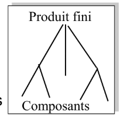
🔌
- Beaucoup de produits
- Peu de composants
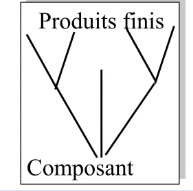
🥛
Structures des produits (2)
Structure à points de regroupement : les sous-ensembles standards sont assemblés en plusieurs produits finis.
🧩 Beaucoup de produits finis
🔩 Beaucoup de composants
📦 Sous-ensembles standards
🚗 ex. automobile
Quantité de produits et répétitivité
- 1 seul produit est à réaliser (projet)
🏗️
✈️
Petite et moyenne série
✈️
Types de production (1)
- Productions unitaires
- Flux limité (voire nul pour certains ouvrages)
- Objectif : minimiser le délai de livraison
🎯
- Par lot ou « Job Shop », « batch »
- Grande diversité de produits
- Moyens de production nombreux et flexibles (non dédiés à un produit)
- Flux de produits dépendent de la gamme de fabrication
- Objectif : respecter les délais pour l'ensemble !
🌊
Types de production (2)
- « Flow-shop »
- Famille de produits
- Moyens de production dédiés au produit
- Objectif : fiabilité pour assurer la productivité
🚀
Organisation des flux de production (1)
Sections homogènes : les ressources de production sont regroupées par type.
🔁 Production discontinue
📉 Productivité faible
🧘 Flexibilité importante
Organisation des flux de production (2)
Lignes de fabrication : les ressources sont alignées suivant la gamme du produit.
➡️ Production continue
📈 Productivité importante
🔒 Flexibilité faible
Organisation des flux de production (3)
Îlots de fabrication : les ressources sont regroupées en îlots pour une famille de produits.
⚖️ Compromis
📊 Productivité moyenne
🧘 Flexibilité moyenne
Objectifs de la gestion de production
- Les produits, au bon niveau de :
- Qualité
- Coût
- Délai
📦
- L'utilisation des ressources :
- Humaines
- Techniques
⚙️
- Qualité : personnel, « SPC » (MSP), …
- Productivité : SMED, automatisation réfléchie, …
📈
⏱️ Contexte : délais courts · coûts faibles · capacité réduite d'investissement · demandes changeantes
Fonctions de la gestion de production
📦
Gérer les matières premières
Modèle du système de production
Le système de production est un système hiérarchisé de décision articulé autour d'un système d'information et d'un système physique.
🏔️ Système de décision
💾 Système d'information
⚙️ Système physique
Données nécessaires à la gestion de production
- Ventes fermes ou prévisionnelles
📣
- Nomenclature
- Gamme de fabrication
- Identification (produit, machine)
📐
- État du système physique
- Calcul des coûts
📊
✅ Données FIABLES !!!
Conclusion partielle
🧭
Gestion de production aujourd'hui
- Petites séries
- Produits personnalisés
- Pas de stocks
- Produits évoluant dans le temps
- Informatisation (GPAO, ERP)
🧭
- Charge variable
- Ressources humaines (capacité variable ?)
- Ressources techniques (fiabilité, rentabilité ?)
⚠️
Définitions — Quiz : trouvez la bonne définition
📈
Productivité
🖱️ cliquez pour le quiz
↩︎ retour
La productivité, c'est le rapport entre…
A. les ventes et les achats
B. la production réalisée et les ressources employées
C. le stock et la demande
D. le délai et le coût
📉 Définition : production obtenue ÷ ressources consommées. Elle mesure l'efficacité de l'utilisation des moyens humains et techniques.
🤸
Flexibilité
🖱️ cliquez pour le quiz
↩︎ retour
La flexibilité, c'est :
A. la capacité à produire plus vite
B. la réduction maximale des stocks
C. l'aptitude du système de production à s'adapter aux changements
D. le respect strict du planning
🤸 Définition : aptitude du système de production à s'adapter aux variations (produits, volumes, délais) sans modification lourde des moyens.
⚡
Réactivité
🖱️ cliquez pour le quiz
↩︎ retour
La réactivité, c'est :
A. anticiper la demande par les prévisions
B. la capacité à répondre vite aux événements et à la demande
C. produire en grandes séries
D. stocker pour éviter les ruptures
⚡ Définition : aptitude à déclencher et adapter rapidement la production face à la demande ou aux aléas (délais de réponse courts).
📦
Produit
🖱️ cliquez pour le quiz
↩︎ retour
Un produit, c'est :
A. uniquement un bien tangible
B. un document de planification
C. toute pièce stockée dans l'entrepôt
D. un bien ou un service issu de la production, destiné à satisfaire un besoin
📦 Définition : résultat du processus de production — bien ou service — destiné à satisfaire les besoins des clients.
🏷️
Article
🖱️ cliquez pour le quiz
↩︎ retour
En gestion de production, un article désigne :
A. un texte de publicité
B. une commande client
C. toute référence gérée : matière, composant, produit fini…
D. uniquement un produit fini
🏷️ Définition : tout élément identifié par une référence et géré en quantité dans le système (stocks, achats, production).
📋
Nomenclature
🖱️ cliquez pour le quiz
↩︎ retour
Une nomenclature (BOM), c'est :
A. la liste des clients
B. le planning des machines
C. la liste des fournisseurs
D. la liste hiérarchique des composants et quantités pour fabriquer un produit
📋 Définition : arborescence structurée des composants nécessaires à la fabrication d'un produit (BOM) — base du calcul des besoins (MRP).
Définitions (2) — Quiz : trouvez la bonne définition
🛠️
Gamme de fabrication
🖱️ cliquez pour le quiz
↩︎ retour
Une gamme de fabrication, c'est :
A. la liste des produits à fabriquer
B. la suite ordonnée des opérations avec les postes de travail et les temps
C. le calendrier des livraisons
D. la liste des matières premières
🛠️ Définition : séquence ordonnée des opérations de fabrication, avec les machines/postes et les temps associés, pour transformer la matière.
⏳
Délai de livraison / cycle de production
🖱️ cliquez pour le quiz
↩︎ retour
Le cycle de production, c'est le temps entre…
A. la commande client et la livraison
B. le transport et la réception
C. le lancement en fabrication et l'obtention du produit fini
D. deux changements de série
⏳ Définition : cycle de production = lancement → produit fini ; délai de livraison = temps promis au client entre sa commande et la livraison.
📦
Lot de production
🖱️ cliquez pour le quiz
↩︎ retour
Un lot de production, c'est :
A. la production totale de l'année
B. un groupe de machines
C. la quantité fabriquée lors d'un même lancement
D. un lot de commandes clients
📦 Définition : ensemble d'articles produits au cours d'un même lancement de fabrication (la taille de lot résulte d'un arbitrage coût/perte de temps).
🔧
Temps de reconfiguration
🖱️ cliquez pour le quiz
↩︎ retour
Le temps de reconfiguration correspond à :
A. le temps de réparation d'une machine
B. le temps pour adapter les moyens à la fabrication d'un autre produit (changement de série)
C. le temps de formation du personnel
D. le temps d'attente des commandes
🔧 Définition : durée du changement de série pour passer d'un produit à un autre — l'objectif du SMED est de le réduire au maximum.
📄
Ordre de Fabrication (OF)
🖱️ cliquez pour le quiz
↩︎ retour
Un Ordre de Fabrication (OF), c'est :
A. une commande client
B. une facture fournisseur
C. un rapport de qualité
D. le document qui autorise et lance la fabrication d'une quantité
📄 Définition : ordre lancé par la planification (issu du MRP), précisant le produit, la quantité et les dates de fabrication.
🏁
Bonus : le SMED
🖱️ cliquez pour le quiz
↩︎ retour
Question bonus — le SMED vise à :
A. supprimer les stocks de matières
B. automatiser toute la production
C. réduire drastiquement les temps de changement de série
D. augmenter la taille des lots
🏁 Définition : « Single Minute Exchange of Die » — méthode pour réduire les temps de reconfiguration (changement d'outil/série) en moins de 10 minutes.
Chapitre 2
Planification
📆
Planifier
🔄
SYNCHRONISER la fabrication des produits, l'arrivée des matières, l'arrivée des outillages et l'utilisation des ressources
⚖️
OPTIMISER les dates de livraison, les stocks et l'utilisation des ressources
⚡
RÉAGIR en gérant les aléas (mode perturbé)
6 niveaux de planification
🏗️
Plan Industriel et Commercial (PIC)
📆
Plan Directeur de Production (PDP)
🧮
Calcul des Besoins Nets (CBN)
🔍
Lancement / suivi de la fabrication
Plan Industriel et Commercial (PIC)
🏗️
Plan à Long Terme (forte incertitude)
- Décisions au plus haut niveau hiérarchique
- Planification des investissements nécessaires
- Planification des financements
🏗️
- Horizon : 3 à 5 ans
- Période : 1 an
- Finesse des données : famille de produits, usine
⏱️
Plan Industriel et Commercial (2)
🎯
ENTRÉES
- Objectifs stratégiques de l'entreprise
- Tendances — développement du marché
➜
🏢
PIC
- Plan Industriel et Commercial
➜
🚚
SORTIES
- Évolution des ventes
- Évolution des productions
- État du système de production
- Investissements / Plans de financement
Plan Directeur de Production (PDP)
📆
« Master Production Schedule »
- Lien entre PIC et plan de charge
- Définit la production à réaliser par période
- Définit les approvisionnements critiques
📆
- Horizon : 1 à 2 ans (supérieur au cycle appro. + cycle fab. + cycle livraison)
- Période : 1 à 3 mois
- Finesse des données : produits, centres de charge
⏱️
Plan Directeur de Production (2)
📥
ENTRÉES
- Politique de production de l'entreprise
- Prévisions commerciales et stocks
- Capacités de production
- Lots économiques
➜
📆
PDP
- Plan Directeur de Production
➜
📤
SORTIES
- Production des produits par période
- Approvisionnements critiques
Calcul des Besoins
🧮
Principe de base du MRP (et MRP2)
- Définit les dates et quantités d'approvisionnement de tous les articles (besoins dépendants)
- pour couvrir les besoins en produits (besoins indépendants)
🧮
- Horizon : 1 à 3 mois
- Période : 1 à 5 jours
- Finesse des données : articles, moyens de production
⏱️
Calcul des Besoins (2)
📥
ENTRÉES
- Nomenclatures
- Prévisions de production du produit fini et stocks d'articles
- Lots économiques
- Délais de production / livraison
➜
➜
📤
SORTIES
- Production des articles par période
- Approvisionnements par période
Mécanisme du Calcul des Besoins
🔽
Pour chaque produit — en descendant dans la nomenclature — puis pour chaque article :
🧲
Regrouper les Besoins Bruts issus des différents produits
➖
Besoin Net (P) = Besoin Brut (P) − Stock (P−1)
🗓️
Début OF = Période du Besoin Net − Délai de production
📦
Quantité à produire dépend des lots de production
Plan de Charge
- Définit les charges dépendant des OF prévus par le Calcul des Besoins
- Comparaison de la charge à la capacité
- Définit les actions à réaliser pour satisfaire les délais et les contraintes de production
📊
- Horizon : 1 à 6 mois
- Période : 1 semaine à 1 mois
- Finesse des données : article, centre de charge
⏱️
Plan de Charge (2)
📏 Gammes
⬇
📥
ENTRÉES
- OF proposés
- Capacités de production
➜
➜
📤
SORTIES
- OF à réaliser par période
- Charge par centre de charge
Équilibre charge / capacité
⚖️
MRP2 intègre la contrainte de capacité (pas MRP)
- Pour équilibrer charge et capacité
- Variation de capacité : heures supplémentaires, chômage partiel, nombre d'équipes, intérimaires, investissements machines
⚖️
- Anticipation de charge
- Retard de livraison négocié
- Sous-traitance
- Utilisation de gammes de substitution
🔁
Ordonnancement
- Définit l'ordre dans lequel les Ordres de Fabrication doivent se succéder sur chaque poste de travail
⚙️
- Horizon : 1 mois
- Période : de 1 minute à 1 jour
- Finesse des données : la plus précise possible (opération, temps de changement de production…)
⏱️
Ordonnancement (2)
📏 Gammes
⬇
📋 Critères d'ordonnancement
⬇
📥
ENTRÉES
- OF
- Disponibilités des ressources
➜
➜
📤
SORTIES
- Succession d'OF à réaliser par ressource
- Besoins en compétences
Difficultés liées à l'ordonnancement
🧮
Combinatoire élevée : beaucoup de produits, beaucoup d'opérations, beaucoup de ressources
⏳
La solution optimale est difficile à obtenir dans un délai raisonnable
🌪️
… et difficile à appliquer : le caractère dynamique de la production (aléas) bouleverse la planification
Diagramme de Gantt
Représentation des opérations et des ressources par des bâtonnets proportionnels au temps d'occupation de la ressource par une opération.
Lancement / suivi de la fabrication
🤝
Interface entre la planification et la production
📂
Prépare le dossier de lancement — demande d'approvisionnement (articles achetés) ; demande de fabrication (articles fabriqués) : OF, gamme opératoire, bons de travaux (1 par opération), fiche suiveuse, bons de sortie matière et outillages
👀
Suit la production — transmission de l'information de fin de chaque opération
Méthode de gestion de production
MRP / MRP2
🧮
Définitions
🧮
MRP — Material Requirements Planning
- Définit un programme de production sur la base des nomenclatures
- Sans prendre en compte les capacités des moyens de production (capacité infinie)
🧮
🏗️
MRP2 — Manufacturing Resources Planning
- Complète MRP en prenant en compte la limite de capacité des ressources (capacité finie)
- Ajuste la charge en fonction des capacités (bouclage du plan de charge)
🏗️
Limites de la gestion des stocks
- Définit les quantités à stocker par compromis entre coût de détention et coût d'acquisition
- Hypothèses : régularité de la demande, indépendance des produits gérés
📦
- Un produit est formé de 12 composants gérés en gestion des stocks, avec un risque de rupture de 5 % chacun
- Probabilité que les 12 composants soient disponibles en même temps : 0,95¹² ≈ 0,54
⚠️
Besoins indépendants / dépendants
🙋
Besoins indépendants (ou externes)
- Exprimés par les clients (produits finis, pièces de rechange)
- Demande régulière → traitement statistique
🙋
🧩
Besoins dépendants (ou internes)
- Sous le contrôle de l'entreprise — calculables à partir des besoins indépendants par décomposition arborescente des produits finis en composants
- Pas de consommation régulière → pas de traitement statistique
🧩
Principe du MRP
🔗
Les besoins dépendants doivent être définis à partir des besoins indépendants !
🧩
Les besoins en composants et articles doivent être calculés à partir des besoins en produits finis !
🧮
Le calcul des besoins (dépendants à partir des indépendants) est la base du MRP (donc de MRP2) !
Conditions préalables à l'implantation de MRP/MRP2
📆
Existence d'un Plan Directeur de Production
🌳
Existence de nomenclatures
⚖️
Capacités de production (MRP2)
PDP
- Définit la programmation de la production des produits finis pour faire face à une demande ferme et prévisionnelle (transmise par les commerciaux)
📆
➡️
Rôle dans le calcul des besoins
- Le résultat du PDP est utilisé comme donnée d'entrée au calcul des besoins
- pour définir les besoins nets jalonnés des articles
➡️
Plan Directeur de Production (exemple)
Le produit fini a un stock initial de 60 produits.
Produit INT56 — Lot de lancement 200 — Stock de sécurité 0
| Période | 0 | 1 | 2 | 3 | 4 | 5 | 6 |
|---|
| Plan des besoins commerciaux bruts | | 180 | 180 | 60 | 50 | 150 | 160 |
| Stocks | 60 | 80 | 100 | 40 | 190 | 40 | 80 |
| Plan des besoins commerciaux nets | | 120 | 100 | (-40)0 | 10 | (-40)0 | 120 |
| Plan Directeur de Production | | 200 | 200 | 0 | 200 | 0 | 200 |
Calcul des Besoins
🔽
Pour chaque produit — en descendant dans la nomenclature — puis pour chaque article :
🧲
Regrouper les Besoins Bruts issus des différents produits
➖
Besoin Net (P) = Besoin Brut (P) − Stock (P−1)
🗓️
Début OF = Période du Besoin Net − Délai de production
📦
Quantité à produire dépend des lots de production
Calcul des Besoins (exemple)
⏱️
Délai d'assemblage : 1 période
⏳
Délai de réalisation des branches : 2 périodes
📦
Lot de production lunettes : 100
📦
Lot de production branches : 200
Calcul des Besoins (exemple 2)
| Période | 0 | 1 | 2 | 3 | 4 | 5 | 6 |
|---|
| PDP lunettes | | 100 | 100 | 100 | 200 | 100 | 200 |
| En-cours et stocks lunettes | 200 | 100 | 0 | 0 | 0 | 0 | 0 |
| Besoins nets lunettes | | (-100)0 | 0 | 100 | 200 | 100 | 200 |
| Ordres de lancement lunettes | | 0 | 100 | 200 | 100 | 200 | |
| Besoins bruts branches | | 0 | 200 | 400 | 200 | 400 | |
| En-cours et stock branche | 100 | 100 | 100 | 100 | 100 | 100 | |
| Besoins nets branches | | | 100 | 300 | 100 | 300 | |
| Ordres de lancement branches | 200 | 400 | 200 | 400 | | | |
Plan de Charge
📊
Définit la charge par période et par ressource
🧭
Peut être réalisé à tout moment, à différents niveaux de détail — ressources : entreprise, usine, centre de charge, ressource — périodes : année, mois, jour
🌊
Peut être lissé (MRP2) suivant les capacités, en intégrant les priorités des produits
Lissage du plan de charge
⚡ On déplace la surcharge vers une période sous-chargée
Difficultés dans la mise en œuvre
💾
Beaucoup de données à traiter — difficulté de mise à jour
🖥️
Informatisation (souvent) nécessaire
💸
Progiciels lourds et coûteux (BPCS, MAPICS, SAP/R3 (ERP)… 300 k€)
⚠️
Mauvaises performances en court terme — déviation courante : utilisation maximale des machines
Progresser ?
🧾
La comptabilité valorise peu…
- la diminution des stocks et encours
- la diminution des cycles de production
🧾
- Cycle de production maîtrisé et court + peu de stocks
- Gain de trésorerie
- Nouveaux marchés possibles
💎
Conclusion MRP/MRP2
🏭
Méthode de GP pour de nombreux produits, avec de nombreux composants et articles
🧮
Principe du calcul des besoins en composants à partir des besoins en produits finis
♾️
Capacité infinie en MRP, capacité finie en MRP2
📊
Nécessite des données techniques et commerciales fiables
Conclusion MRP/MRP2 (2)
🖥️
Informatisation (GPAO, ERP) pour la gestion à moyen terme
🍃
Simplifier le problème à gérer (concepts du Juste À Temps : MRP délais courts)
✂️
Familles d'articles • lignes et îlots de production • diminution des lots de production et de transport (maîtrise des procédés et des temps inter-opératoires) • maintenance préventive, SMED, 5S…
Chapitre 3
Données techniques & GPAO / ERP
💾
Les données
La gestion de production nécessite de nombreuses données :
- Évolution du marché
- Liste des clients
- Liste des fournisseurs
- Planning des commandes
📊
- Fichier descriptif des articles
- État des stocks
- Nomenclatures
- Description des ressources
- Gammes de fabrication
- Calendriers
🔧
Données et GPAO
Commandes, stocks, nomenclatures, gammes et calendriers alimentent la planification
Nomenclatures
🌳
Base de la décomposition du produit fini en articles
⚠️
Difficultés : mise à jour • variantes
État des stocks
- Permettent de définir ce qu'il faut réellement produire à partir des besoins
- Calcul des besoins nets à partir des besoins bruts
📦
- Inventaire : périodicité ? précision ?
- Gérer ce qui est indispensable (pas tout !)
- Informatiser la gestion des stocks ?
⚠️
Délais d'obtention
- Nécessaires pour le jalonnement (anticipation)
⏳
🧮
Composition du délai d'obtention
- Temps opératoires + temps inter-opératoires (attentes + transit)
- + temps de traitement administratif + délai de sécurité
🧮
🕐 En production discrète, le temps d'attente représente 80 % du délai d'obtention
Gammes
- Définit l'enchaînement des opérations pour obtenir le produit fini à partir des composants
- Permet le calcul des charges par ressource
📏
- Mise à jour des gammes
- Cohérence entre les gammes prévues (Bureau des Méthodes) et les gammes réelles (Production)
⚠️
Capacités de production
- Définit la charge limite par période des ressources
- Les capacités sont essentielles pour MRP2
🏭
- Intégration de la disponibilité réelle des ressources
- RT : pannes, maintenance préventive, amélioration…
- RH : absences, formations…
⚠️
Priorités sur les produits
- Définit l'importance relative des produits
- Priorité fixe : client important, matière de valeur…
- Priorité dynamique : date de livraison, marge libre…
🚦
- Pour l'ordonnancement
- Pour l'ajustement du plan de charge (en MRP2)
🎯
Informatisation de la gestion de production (apports)
💻
Calculs performants — calcul rapide des besoins nets jalonnés • plan de charge (lissé) • calcul et simulation de l'ordonnancement
💾
Mémorisation des informations — historiques des pannes, des délais, des charges
🧠
Aide à la décision — pour le plan de charge et pour l'ordonnancement
Informatisation de la gestion de production (démarche)
La démarche d'implantation d'un logiciel de GPAO doit permettre d'utiliser efficacement le logiciel
1Analyse de l'existant
2Expression des besoins
3Développement interne ou achat ?
4Test des logiciels, jeu d'essai
5Décision
6Information, formation
7Développement, implantation
Analyse de l'existant
- Identifier comment se gère la production
- Identifier les anomalies (flux physiques, informations, décisions)
🎯
- Analyse fonctionnelle, analyse des flux, analyse des décisions (IDEF, GRAI…)
- Recours à un conseil extérieur (subventions pour PMI via la DRIRE)
🧭
Expression des besoins
- Définir le cahier des charges
🎯
- Objectifs (niveau de performance désiré)
- Conditions de maintenance
- Évolution du produit
- Relation entre le produit et les autres (comptabilité par exemple)
📋
Développement interne ou achat ?
🎯 Décider l'achat d'un progiciel ou le développement d'un logiciel — comparaison :
| Critère | Progiciel | Logiciel |
|---|
| Adaptation au besoin | = | + ? |
| Modification organisation | + | = ? |
| Délai de livraison | + | − |
| Prix | + | − |
| Maintenance | + | − |
| Évolution | + | − |
🟦 + = point fort du progiciel (acheté) • les logiciels internes s'adaptent mieux au besoin
Test des logiciels et jeu d'essai
- Valider l'adéquation de la solution à l'entreprise
🎯
- Le jeu d'essai doit être représentatif de l'entreprise (type de gamme, de ressources, de produits…) et des volumes d'information à traiter
- Le test doit valider le progiciel par rapport aux attentes
🧪
Choix
- Retenir la solution (1 progiciel parmi une liste) ou valider un logiciel
🎯
- L'ensemble des personnes concernées doit être consulté :
- utilisateurs, direction, service informatique, service formation…
👥
Information, formation
- Impliquer chacun dans le projet
- Ne pas laisser se créer une différence entre les "initiés" et les autres
🎯
- Information dès le début de l'ensemble du personnel
- Formation aux concepts de gestion de production, au logiciel et éventuellement aux méthodes d'analyse
🎓
Développement, implantation
- Préparer les données pour faciliter leur saisie
🎯
- Mettre en place la nouvelle organisation avant l'informatisation (séparer les problèmes d'organisation des problèmes informatiques)
- Mettre en place d'abord une application simple rendant le maximum de service aux utilisateurs
🛠️
Difficultés d'implantation
👥
Problèmes humains — peur de l'informatique • remise en cause des rôles et des "pouvoirs" sur l'information • obligation de clarifier les responsabilités
⏳
Problèmes de délais — retard de mise en place donc risque de démotivation
📊
Problèmes de données — attention au temps de saisie et de mise à jour !
ERP : Enterprise Resource Planning
- Système intégrant les différentes applications spécifiques séparées
- Coût élevé : plusieurs millions d'euros
🏢
- Base de données unique (saisie unique)
- Interface utilisateur unique
- Uniformité des règles de gestion
- Outils d'analyse (Executive Information Systems, reporting)
✨
Structure d'un ERP
Chaque module s'appuie sur la base de données centrale unique
Principaux progiciels dont ERP (PGI)
🌍
ERP généralistes — SAP R/3, PeopleSoft, Oracle Applications, JD Edwards, Intentia
🧪
Agro-alimentaire / chimie — Marcam Protean, Ross System Renaissance
🚦
Ordonnancement — Dullin Ortems, Ouroumoff Préactor, Ordo
🌊
Simulation de flux — Serete Industries Witness, Log'in Cadence
SAP R/3 : le plus diffusé
SDSales and Distribution
MMMaterials Management
PPProduction Planning
QMQuality Management
PMPlant Maintenance
HRHuman Resources
FIFinance
COContrôle de gestion
AMImmobilisations
PSGestion de projets
WFWorkflow
ISSolutions métier
Gestion commerciale — Module SD
🛒
Sales and Distribution — fonctions
- Gestion des prospects et clients
- Prévisions moyen et court termes
- Saisie des commandes
- Détermination des prix
- Facturation
🛒
🚚
Disponibilité & transports
- Détermination de la disponibilité à la vente (en conjonction avec les modules achat et production)
- Planification des transports
🚚
Gestion des achats et des stocks — Module MM
📦
Stocks & produits finis
- Suivi des stocks (valeur, quantité)
- Suivi des produits finis (en lien avec la gestion commerciale)
📦
- Matérial Management — définition des demandes d'achats
- Gestion des achats (comparaison de fournisseurs)
- Gestion des magasins
🛒
Gestion de la production — Module PP
📆
Plan Industriel et Commercial
📆
Plan Directeur de Production
🧮
Calcul des Besoins (MRP)
🌊
Gestion des flux (OF, Kanban…)
Gestion de la qualité — Module QM
📈
SPC et carte de contrôle
Gestion de la maintenance — Module PM
🔧
Description des ressources techniques
💸
Suivi des réparations (coûts)
🗓️
Planification de la maintenance préventive
Gestion des données techniques
📦
Articles — chaque article est référencé et géré (description, règles de gestion, données comptables)
🌳
Nomenclatures — font les liens entre articles (composant / composé)
⚙️
Postes de charge — ensembles de ressources permettant de réaliser les mêmes opérations (mêmes coûts)
Chapitre 3
Gestion des stocks
📦
Utilité des stocks
⚡
Cadence — faire face à une différence entre la cadence de consommation et la cadence de production (anticipation de la production)
🛡️
Protection — face aux incertitudes
🔗
Découplage — entre les opérations
Augmenter les stocks ?
- Masquer les problèmes de production
🎭
- Immobilise de l'argent — l'argent en stock n'est pas en trésorerie
💸
🌪️ Les aléas masqués : incertitude des prévisions • absences • procédés non maîtrisés • retards fournisseurs
Classification des stocks
- Identifier les articles à gérer avec plus d'attention
🎯
- Aussi appelée "Loi de Pareto" ou "loi des 80-20"
📊
📈 20 % des articles représentent 80 % de la valeur → classe A
Classification des stocks (2) — méthodologie ABC
1Calculer la consommation annuelle de chaque article (quantité)
2Calculer la valeur annuelle de cette consommation pour chaque article
3Classer les articles par ordre décroissant de leur valeur annuelle
4Calculer le pourcentage de chaque article et le pourcentage cumulé (ordre décroissant)
5Tracer la courbe
Magasinage
- Simple mais nombreuses manutentions
🏬
🏗️
Gestion multi-magasins
- Regroupement par nature de produit ou par proximité géographique
- Plus complexe à gérer
🏗️
📦 Pour un produit : gestion mono-emplacement ou multi-emplacements
Opérations de gestion des stocks — entrées et sorties
- Vérification de la conformité des produits reçus
- Vérification de la quantité reçue
- Mise en place à l'endroit défini
📥
- Sortie du stock après commande client (produits finis) ou bons de sortie
- Vérification de la quantité délivrée et de la référence par rapport à la demande
📤
Opérations de gestion des stocks (3) — les inventaires
L'inventaire permet de vérifier la qualité des articles en stock et de valider si le stock réel = valeur informatique
🔄
Inventaire permanent — mise à jour permanente à chaque entrée / sortie
📅
Inventaire intermittent — pour tous les articles de l'entreprise • au moins une fois par an (obligation comptable)
🎯
Inventaire tournant — pour un ensemble d'articles • la fréquence dépend de l'importance (classe A)
Valorisation des stocks
Les coûts associés aux stocks sont de différentes natures :
Coût d'acquisition
- Coût calculé à la ligne de commande (1 référence, 1 quantité, 1 prix, 1 délai)
- De 15 à plus de 150 € la ligne
🛒
- Un Ordre de Fabrication a un coût
- Dépend du temps de reconfiguration et du coût administratif
🏭
Coût de possession
🏢
Structures d'accueil du stock — loyer et entretien de l'entrepôt, électricité, manutention
🧊
Détérioration / obsolescence des produits stockés
🗂️
Frais généraux et frais de gestion du stock
📈 Coût de possession proportionnel à la valeur des stocks : 25 % à 40 % par an
Coût de rupture
- L'absence d'un article ou produit fini a un coût
- La rupture n'est pas tolérée dans certains domaines (santé, nucléaire…)
🚫
- Retard sur produit (pénalités ?)
- Vente manquée, client perdu ?
- Crédibilité perdue → clients perdus
- Arrêt de production
📦
Quantités économiques
- Minimiser le coût du stock
🎯
- Commander peu mais souvent — faible coût de possession, mais coût d'acquisition important
- Commander beaucoup mais rarement — coût de possession important, mais faible coût d'acquisition
- Coût de possession et coût d'acquisition sont contradictoires
⚖️
Formule de Wilson
- Trouver le compromis entre le coût d'acquisition et le coût de possession
🎯
- Coût d'acquisition proportionnel au nombre de commandes
- Coût de possession proportionnel au stock moyen
- Consommation continue (proportionnelle au temps)
- Livraisons parfaitement planifiées
📌
Formule de Wilson (2) — évolution du stock
Le stock évolue entre 0 et Q (quantité reçue à chaque livraison) ; le stock moyen vaut Q/2
Q
stock moyen = Q/2
0
temps →
Formule de Wilson (3) — graphiques
Le coût total est minimal à l'intersection du coût d'acquisition et du coût de détention : q* et n*
Formule de Wilson (4) — les variables
📊
S — les besoins à satisfaire dans l'année
🏷️
U — le prix unitaire de l'article
📅
T — le taux de détention de l'article (0 < T < 1)
🧾
a — le coût d'acquisition
📦
q — la quantité par commande (q/2 : le stock moyen)
🔢
n — le nombre de commandes dans l'année (n = S/q)
Formule de Wilson (5) — optimisation du nombre de commandes
Z = a·n + S·U·T / 2n
On dérive par rapport à n (nombre de commandes) — le minimum est atteint pour la dérivée nulle :
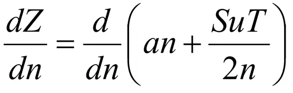
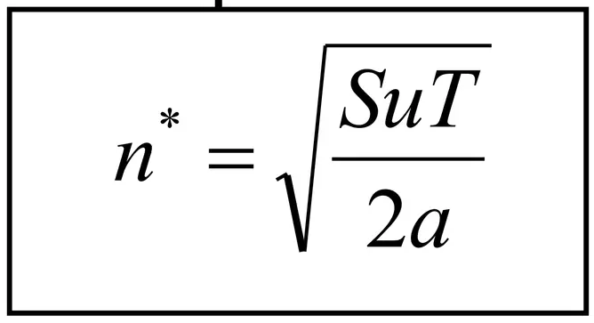
Formule de Wilson (6) — optimisation de la quantité à commander
Z = a·S/q + q·U·T / 2
On dérive par rapport à q (quantité par commande) — le minimum est atteint pour la dérivée nulle :
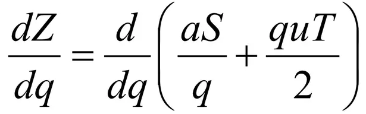
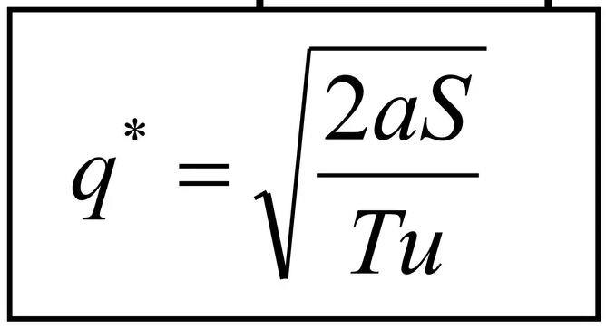
Formule de Wilson (7) — sensibilité
⚠️
Hypothèses très restrictives — les paramètres de coûts d'acquisition et de possession sont difficiles à obtenir
🛡️
Formule très robuste — erreur du simple au double sur le coût d'acquisition : variation de 40 % de q* mais seulement 6 % sur le coût total !
🪄
On peut arrondir les résultats — erreur de 10 % sur q* : 0,5 % sur le coût total
Quantités économiques avec remise
Les fournisseurs proposent des remises sur les prix si les commandes sont réalisées en quantité importante
- Si la commande Q dépasse le seuil R, le prix unitaire de tous les produits commandés est diminué
🏷️
- Si la commande Q dépasse le seuil R, seul le prix unitaire des produits commandés au-dessus du seuil est diminué
➕
Seuil de rabais unique (1)
1Si Q < R → le coût unitaire est U1
2Si Q ≥ R → le coût unitaire est U2 (U1 > U2)
3Calculer q1* avec U1 — si q1* < R, calculer le coût (acquisition + possession + achat)
4Calculer q2* avec U2 — si q2* ≥ R, calculer le coût (acquisition + possession + achat)
5Calculer le coût avec q = R
Seuil de rabais unique (2)
🎯
L'optimum est une des trois solutions
⚖️
On compare le coût dans les 3 cas et on choisit la solution admissible ayant le coût le plus faible
Seuil de rabais unique (3) — exemple
📋
Données — 100 unités dans l'année • taux de possession 25 % • coût de passation 50 € • U1 = 100 € (moins de 50 produits), U2 = 81 € (plus de 50 produits)
1️⃣
q1* = 20 (< 50 → admissible) ; CT(q1*) = 10 500 €
2️⃣
q2* = 22 (< 50 → pas admissible !)
🏆
CT(R) = 8 706 € → l'optimum est des commandes de 50 produits (R)
Politiques de gestion des stocks
Quand commander ? • Combien commander ?
| Période fixe | Période variable |
|---|
| Quantité fixe | méthode de réapprovisionnement | méthode à point de commande |
|---|
| Quantité variable | méthode de recomplètement | méthode à période et quantité variable |
|---|
⚠️ Si la périodicité et la quantité sont fixes, on ne s'adapte pas aux variations !
Méthode à point de commande
Quantité fixe, période variable — la commande est passée lorsque le stock atteint le point de commande (seuil de déclenchement)
Pc = Délai de livraison × consommation
Méthode de recomplètement
- Période fixe, quantité variable
- La quantité Qi commandée doit être suffisante pour atteindre le niveau de recomplètement
📆
- Qi = R − qi + Délai de livraison × conso
🧮
Comparaison entre les 2 méthodes
- Suivi précis du stock
- Demande à forte variabilité
- Articles importants (pas de rupture !)
- Réapprovisionnement fiable et rapide
🎯
- Demande et délais d'obtention constants
- Articles à coût de détention faible
- "Aveugle" entre 2 périodes !
📆
Aléas et stock de sécurité
- Consommation excessive
- Retards de livraisons
- Problèmes de qualité
🌪️
⚖️
Une contradiction, un objectif
- Éviter les ruptures et avoir un stock de sécurité faible
- Définir un niveau de stock de sécurité (stock dormant)
- Compromis coût de rupture / coût de possession
⚖️
Calcul du stock de sécurité
- La demande suit une loi normale (variable)
- Le taux de service à atteindre est connu
- Le délai de consommation entraînant un risque de rupture est fixe
📌
📆
D : période soumise au risque
- D = délai de livraison en point de commande
- D = période de recomplètement + délai de livraison
📆
Stock sécurité = k × σ × √D
K en fonction du taux de service
K est obtenu par une loi normale centrée réduite
| Taux de service | k |
|---|
| 90 % | 1,28 |
| 95 % | 1,65 |
| 99 % | 2,23 |
Exemple de calcul de stock de sécurité
📋
Données — demande : loi normale, 100 pièces/semaine (σ = 20) • délai d'obtention fixe : 5 semaines • période de révision : 10 semaines • probabilité de rupture souhaitée < 5 %
🧮
Calcul — SS = 1,65 × 20 × √15 = 128 pièces
🎯
Niveau de recomplètement — 1500 + 128 = 1628 pièces
💡 15 = 10 + 5 (révision + délai) et 1500 = 100 × 15
Valorisation du stock
- Pour la comptabilité générale (légale)
- Pour identifier les coûts de production (comptabilité analytique)
🎯
📉
Pourquoi ? Les prix varient
- Entre la commande et la livraison
- Entre l'entrée en magasin et l'utilisation en production
- Suivant l'avancement de fabrication
📉
Méthodes de valorisation
Les méthodes classiques :
🧮
CMUP — Coût Moyen Unitaire Pondéré
📥
FIFO — First In First Out
📤
LIFO — Last In First Out
CMUP = Σ pi·qi / Σ qi
⏳ CMUP calculé par période → il faut attendre la fin de la période pour valoriser les sorties (pas en temps réel)
Méthodes de valorisation (2) — FIFO
Livraisons par lots : les sorties sont valorisées au prix d'achat du lot arrivé en premier tant qu'il en reste (épuisement des lots), puis au prix du lot suivant
| Date | Mouvement |
|---|
| 01/02 | Entrée : 200 à 50 € |
| 06/02 | Sortie : 120 à 50 € |
| 11/02 | Entrée : 150 à 52 € |
| 15/02 | Sortie : 170 = 80 à 50 € + 90 à 52 € |
➡️ Arrivé en premier → sorti en premier
Méthodes de valorisation (2) — LIFO
Livraisons par lots : les sorties sont valorisées au prix d'achat du lot arrivé en dernier tant qu'il en reste (épuisement des lots), puis au prix du lot suivant
| Date | Mouvement |
|---|
| 01/02 | Entrée : 200 à 50 € |
| 06/02 | Sortie : 120 à 50 € |
| 11/02 | Entrée : 150 à 52 € |
| 15/02 | Sortie : 170 = 150 à 52 € + 20 à 50 € |
➡️ Arrivé en dernier → sorti en premier
Conclusion sur la gestion des stocks
🧩
Besoins indépendants — la gestion des stocks s'applique aux besoins indépendants
💰
Les stocks doivent être limités — pour laisser de la trésorerie à l'entreprise
📐
Formule de Wilson — définit les quantités économiques d'achat et de production ; hypothèses strictes mais résultats robustes
🕸️
Méthodes potentiellement très complexes — quel coût de gestion ?
Prévisions — objectif
🔮
Estimer les événements futurs
- Permettre une estimation des événements futurs
🔮
- Prévisions commerciales (PIC ou PDP)
- Évolutions du marché et des parts de marché
- Évolutions de la charge
- Évolutions des coûts
🏭
Types de prévisions
🔭
Horizon — long terme • moyen terme • court terme
🔍
Précision — macro-économie → entreprise → famille de produits → produit
🧰
Technique — qualitative ou quantitative
Prévisions et objectifs
La prévision de l'évolution du marché doit permettre de définir un objectif en termes de part et un objectif quantitatif
Prévisions et objectifs (2) — exemple
📊 Marché prévu 200 → réalisé 180 (écart −20, −10 %) • part visée 25 % → réalisée 30 % • objectif quantitatif 50 → réalisé 54 (+4, +8 % en relatif)
Qui prévoit ?
| Avantage | Inconvénient |
|---|
Homme de terrain
(vendeur, représentant…) |
Connaissance du marché, des produits • intéressé directement par les prévisions |
Confusion prévision / objectif • prévisions influencées par le dernier client et/ou l'optimisme |
|---|
Scientifique
(approche statistique) |
Méthodes quantitatives • informatisation des méthodes |
Méconnaissance du marché, des produits, des clients, des concurrents… |
|---|
🤝 Nécessité d'une coopération entre les 2 approches !
Méthode de prévision
1Acquisition des données (externes et internes)
2Représentation des données
3Identification par rapport à un modèle
4Extrapolation
5Correction et adaptation par le décideur
6Mesure des écarts entre la prévision et la réalité
7Correction du modèle
Données initiales
🗄️
Historique — contraintes
- Valeurs fiables et réelles
- Homogènes dans le temps, avec le niveau de granularité adapté à la prévision
- Nombre suffisant de valeurs sur une période suffisante (saisonnalité ?)
🗄️
- Filtrage pour laisser apparaître les tendances
- Représentation graphique (analyse humaine)
🧹
Évolutions courantes — constante et tendance
Évolutions courantes (2) — saisonnière et saut
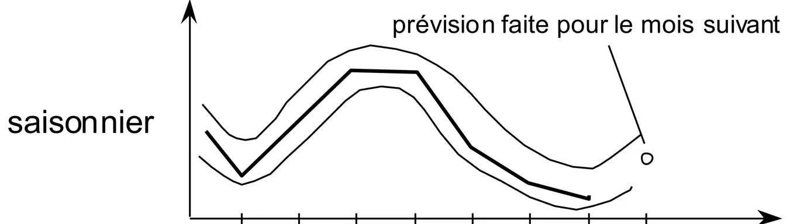
Saisonnière
🔀 Les phénomènes peuvent se combiner
Analyse de séries chronologiques — la moyenne mobile
Évolution constante et lissage : faire la moyenne sur les m derniers échantillons et affecter la valeur à l'échantillon du milieu
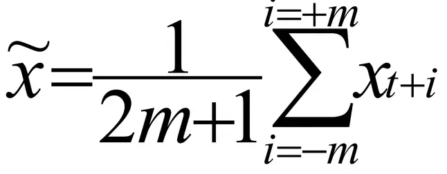
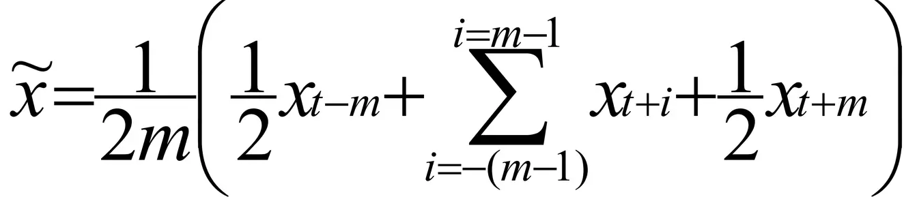
Analyse de séries chronologiques (2) — lissage exponentiel
Donner un poids particulier aux informations récentes (plus proches du point estimé)
Analyse de séries chronologiques (3) — tendance linéaire
La tendance peut être linéaire, exponentielle, puissance… — linéaire : on estime les paramètres de la droite y = ax + b ; la qualité est exprimée par le coefficient de corrélation r
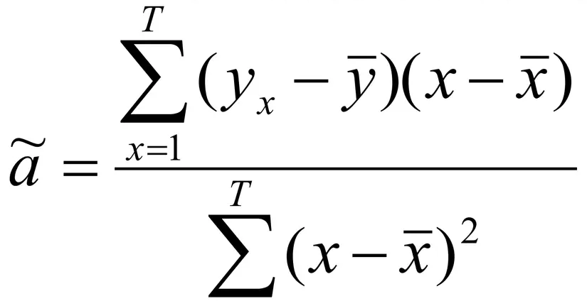
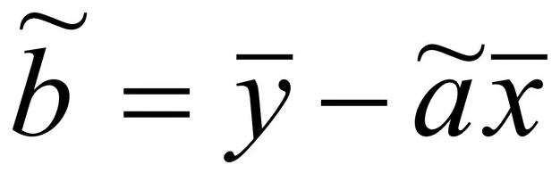
Exemple de prévision par tendance
Analyse de séries chronologiques (4) — évolution saisonnière
La valeur estimée = valeur estimée avec la tendance (droite de régression) + valeur de saisonnalité
1Filtrer la saisonnalité
2Calculer les valeurs estimées avec tendance
3Calculer les écarts entre valeurs réelles et estimées ; pour une même période (février par exemple), calculer la moyenne des écarts (valeurs de saisonnalité)
4La somme des écarts de saisonnalité doit être nulle (répartition de l'écart)
Exemple de prévision saisonnière
Conclusion sur les prévisions
🧭
Indispensables en gestion de production
🧪
Doivent être menées avec prudence et méthode
⚠️
Horizon lointain = plus d'incertitude !
Kanban — historique et objectifs
- 1958 : implantation du Kanban chez Toyota (Japon)
- "Kanban" = étiquette en japonais
- Constat : les entreprises avaient tendance à faire de la surproduction
📜
- Produire le produit demandé
- À la date demandée
- En quantité demandée
🎯
Kanban — principe : le flux tiré
- La commande du client = demande au poste final
- Les composants sont produits et acheminés vers le poste final, assemblés et livrés (flux physique)
🔗
🧲
Flux tiré — pas flux poussé
- Le moyen de production appelle les composants aux moyens situés en amont = producteur
- Notion de flux tiré (par opposition au flux poussé en MRP)
🧲
Kanban — fonctionnement
1Le poste 2 consomme les pièces produites par le poste 1
2Quand le poste 2 reçoit un container de pièces, l'opérateur détache l'étiquette (Kanban) et la renvoie au poste 1
3Quand le poste 1 a des étiquettes correspondant à un produit, il peut les réaliser et les envoyer au poste concerné
🏷️ L'étiquette indique : machine productrice • machine utilisatrice • type de produit • capacité du container
Kanban — fonctionnement (2)
Kanban — fonctionnement (3)
Calcul du nombre de Kanbans
1Combien de produits par container ?
2Combien de containers ? (nb containers = nb Kanbans)
3Nb produits = taille de lot (production ou transfert)
⚖️ Contraintes : trop de pièces par container → encours importants • trop peu → trop de reconfigurations
Calcul du nombre de Kanbans (2)
Le nombre de Kanbans doit être défini puis progressivement diminué pour limiter l'encours
n = ( D × L + G ) / C
📦
D — demande moyenne de pièces (par heure)
⏱️
L — délai (en heures) de mise à disposition d'un container
🧺
C — capacité d'un container
🛡️
G — stock de sécurité pour l'intégration des aléas
Calcul du nombre de Kanbans (3) — application
n = (500 × 0,5 + 20) / 50 = 6 Kanbans (= 6 containers)
Kanban — conditions nécessaires
📊
Demande stable (PDP lissé ?)
⚡
Temps de reconfiguration courts (SMED ?)
🔧
Pannes limitées (maintenance préventive)
🤝
Partenariat avec les fournisseurs
Kanban — conséquences
🏷️
Étiquette (Kanban) = Ordre de Fabrication
🔢
Nombre de Kanbans limité — soit sur un container de pièces réalisées, soit sur le tableau des pièces à réaliser
🛑
Pas de Kanban sur le tableau d'un poste → le poste ne travaille pas ! Ce temps peut être utilisé pour l'amélioration du poste
Conclusion sur le Kanban
🎯
Kanban adapté pour une production régulière d'une famille de produits avec une production maîtrisée
🤝
Cohabitation MRP / Kanban possible — pièces standards réalisées avec MRP et assemblage personnalisé (configuration)
Chapitre 6
Juste à Temps
⏱️
Juste à Temps — objectifs
- Moyens développés chez Toyota (Japon)
- Produire ce qui est nécessaire, quand c'est nécessaire
📜
0️⃣
Objectifs — les zéros
- Zéro défaut, zéro délai, zéro stock, zéro papier, zéro panne (+ zéro accident)
- Démarche d'amélioration continue
0️⃣
Juste à Temps — les moyens
🗺️
Rationalisation de l'implantation des ressources de production
⚡
Diminution des temps de reconfiguration (SMED)
🔧
Amélioration de la disponibilité des ressources techniques (maintenance)
🚚
Amélioration des approvisionnements (relations avec les fournisseurs)
Rationalisation de l'implantation des ressources
Domaine : en job-shop, modification de l'implantation — de sections homogènes vers les îlots
Rationalisation de l'implantation (2) — démarche
1Identification des gammes de fabrication (attention aux différences entre gamme théorique et gamme réelle)
2Regroupement des gammes similaires pour créer des familles de produits (production similaire)
3Identification des contraintes (RT impossibles à déplacer, arrivées de fluides…)
4Définition de la nouvelle implantation
5Planification des déplacements puis déplacement physique des RT
Diminution des temps de reconfiguration — SMED
Single Minute Exchange of Die (méthode japonaise)
- Diminuer la taille des lots de production (compromis entre temps de reconfiguration et coût de stockage)
🎯
- Transférer les opérations réalisées à l'arrêt de la machine pour les réaliser en fonctionnement
- Limiter celles en fonctionnement
⚙️
SMED (2) — la démarche
🔍
Identification des opérations internes (arrêt) et externes (en fonctionnement)
🔄
Transformation des opérations internes en opérations externes (ou suppression)
📏
Standardisation des fonctions (limiter les réglages)
🔩
Serrages fonctionnels (1 seul pas)
🧍
Synchronisation des tâches (1 opérateur pour plusieurs machines)
🚫
Suppression des réglages (pré-réglé) • mécanisation
SMED (3) — exemples
- Temps de reconfiguration avant SMED : 8 heures
- Temps après SMED (1 an projet) : 3 minutes
🛠️
- Temps de reconfiguration avant SMED : 2 heures
- Temps après SMED (10 keuro) : 15 minutes
🧱
Amélioration de la disponibilité des RT — maintenance
- Taux de panne (robustesse, fiabilité)
- Durée des pannes (maintenabilité)
📶
- Préventive (systématique, prédictive)
- Curative
🔧
Types de maintenance
🩹
Curative — la maintenance est réalisée quand il y a une panne
🗓️
Préventive systématique — les pièces d'usure sont changées périodiquement (changement de courroie tous les 100 000 km)
📡
Préventive prédictive — les indicateurs anticipant la panne sont mesurés (vibrations, couple) ; la pièce n'est changée que si la panne semble proche !
Politique de maintenance
🎯 Objectif : disponibilité au moindre coût
👷
Maintenance de premier niveau par l'opérateur (responsable ? jusqu'à quel niveau ?)
⚖️
Optimisation du coût de maintenance par compromis entre préventif et curatif
🔬
Analyse des pannes pour trouver la cause (AMDEC : Analyse des Modes de Défaillance, de leurs Effets et de leur Criticité)
Amélioration des approvisionnements — fournisseurs
✅
Assurance qualité — contrôle des produits par le fournisseur ; confiance du client (validée par audit fournisseurs)
🤝
Partenariat — accord de longue durée ; possibilité pour le fournisseur d'investir (donc de limiter les coûts de production)
🚚
Application du JAT chez le fournisseur — livraisons en faible quantité mais forte fréquence ; simplifications administratives
Conclusion sur le Juste à Temps
0️⃣
Vers l'entreprise idéale (5 zéros) ! — démarche d'amélioration continue
🧑🤝🧑
Importance des ressources humaines — responsabilité, participation à l'amélioration continue (QUALITÉ), paix sociale
📉
Résultats — diminution de la taille des lots, diminution des encours, réduction du cycle de production, réduction des délais de livraison, diminution des coûts de production
Distribution physique
- Mise à disposition des produits fabriqués avec des contraintes de niveau de service, de coût et de délai
🎯
- Traitement des commandes • manutention • emballage
- Entreposage • gestion des stocks • transport
📦
Distribution physique (2) — niveaux
- Gestion des stocks
- Définition des tournées
- Définition des règles de gestion de l'entrepôt
🧾
🏗️
Niveau structurel — le réseau
- Nombre de niveaux (entrepôt central, dépôt, plate-forme)
- Nombre d'établissements à chaque niveau
- Localisation et capacité des établissements
🏗️
Gestion de l'entrepôt — raisons d'existence
🛡️
Se protéger contre les aléas
⏱️
Réduction des délais de livraison
🧩
Regroupement des produits de différents fournisseurs
Gestion de l'entrepôt (2) — circuit des produits
1Déchargement du moyen de transport
2Contrôle quantité (et qualité)
3Transfert jusqu'à l'emplacement défini
4Déclaration d'entrée (informatique)
5Stockage (quelques jours à quelques semaines)
6Préparation des commandes
7Contrôle, emballage
8Transfert jusqu'au moyen de transport
Gestion de l'entrepôt (3) — méthodes de stockage
📍
Stockage affecté — 1 référence occupe toujours le même emplacement ; facilité de gestion mais risque de sur-dimensionnement de l'entrepôt (faible taux de remplissage)
🎲
Stockage banalisé (aléatoire) — une référence est affectée à un emplacement disponible ; gestion informatisée, fort taux de remplissage
Réseaux de distribution — structure
Réseaux de distribution (2)
🚛
Livraison directe — sans rupture de charge de l'usine au client ; lot suffisant pour remplir un camion ou un wagon, à destination d'un même client
🏢
Système à un étage — centralise les productions de toutes les usines pour les acheminer vers les clients d'une zone géographique (pays)
🏬
Système à 2 étages — avec préparation des commandes au niveau central (bas de reconditionnement) ou local
Évolution des réseaux de distribution (1)
⏱️
Juste à Temps — augmentation de la fréquence des commandes, diminution de la taille des livraisons et réduction des délais
📉
Réduction des coûts de stockage par diminution du nombre de dépôts ; besoins supplémentaires satisfaits par sous-traitance
🏛️
Entrepôt central avec plates-formes d'éclatement (sans stock) pour la livraison finale
Évolution des réseaux de distribution (2)
🤝
Sociétés de distribution physique pour compte d'autrui — transport, entreposage, préparation des commandes, gestion des stocks, conditionnement, étiquetage, réapprovisionnement des linéaires des grandes surfaces ; systèmes informatiques spécifiques
🛒
En grande distribution — plates-formes avec stock pour produit sec ; plates-formes sans stock pour l'alimentaire frais
Distribution Requirements Planning (DRP)
📦 Calcul des commandes à passer par l'entrepôt central par consolidation des besoins exprimés par les dépôts locaux
Les dépôts locaux font des prévisions de distribution. En tenant compte du stock initial, des quantités de livraison et des délais de livraison, les dépôts définissent les commandes à passer au magasin central (// Calcul Besoins Nets)
Affectation des usines aux dépôts
Un problème classique de recherche opérationnelle pouvant être résolu par :
🪨
La méthode du stepping stone
📐
La programmation linéaire (solver Excel)
Supply Chain Management (SCM)
🪖
Logistique — origine militaire puis management (Harvard, 1977)
🔗
Supply Chain — concept apparu dans les années 1990
🏆
Nécessité de domination par les prix ET par la différenciation — coûts, qualité, délai, flexibilité (volume et mix-produit), niveau de service, risques
Logistique — définition
« Gestion des flux de produits et d'informations depuis l'achat des matières et composants jusqu'à leur utilisation par le client, visant à satisfaire la demande finale sous contraintes de délai, qualité et coût »
🗂️
Planification, gestion des opérations, mesure de la performance du fournisseur au client
🧭
Achats, approvisionnements, production, distribution physique
Supply Chain
La chaîne logistique globale ou Supply Chain est une extension de la logistique…
⬅️
À l'amont (fournisseurs des fournisseurs) et à l'aval (clients des clients)
🧩
À d'autres fonctions : conception, achat, approvisionnement, production, distribution physique, soutien logistique, recyclage
Coût de la supply chain
Coût de la Supply Chain ≈ 10 % du CA
📦
Gestion des stocks : 3 %
🖥️
Administration et informatique : 2 %
🚚
Transport : 3 % — calcul ramené à une quantité (euros/tonne)
⚠️ Si marge faible (grande consommation) : coût supply chain > marge ! → organisation logistique performante
Concepts de la supply chain
🌐
Vision globale (entreprise élargie)
👥
Segmentation de la clientèle
🤝
Partenariat fournisseurs, producteurs, distributeurs
⏳
Différenciation retardée
Vision globale — l'entreprise élargie
Segmentation de la clientèle
📦
Volume (10 000 T/an → 1 kg/mois)
🔁
Régularité (tous les jours → 3 fois par an)
🌍
Éloignement (50 m → 8 000 km)
⭐
Niveau de service (99 % géré → 90 %)
☠️
Dangerosité des produits
🏙️
Accessibilité des lieux de livraison (en ville ?)
Adaptation au besoin
🧾
Préparation de commandes particulières
🚚
Livraisons plusieurs fois par jour par palettes
🛃
Exportation (douanes, transitaires, commissionnaires)
🧊
Produits frais (exemple : SC frais différent de SC épicerie chez Nestlé France)
Partenariat fournisseurs, producteurs, distributeurs
📊
Prévisions communes des ventes
✏️
Conception commune des produits
🔗
Conception commune de la chaîne logistique (zones de stockage)
💰
Amélioration conjointe des coûts
🛍️
Développement de la fonction ACHATS
Flux d'informations
🖥️
ERP communs ou communicants
🧮
APS — Advanced Planning and Scheduling Systems : progiciels de SCM apparus vers 1995 ; optimisation de l'ensemble de la chaîne logistique (prévision de demande, planification de production, approvisionnement)
🧱
Couche supérieure des ERP, dont ils utilisent la base de données
🏷️
Principaux : Manugistics, I2, Synquest, Numetrix
Différenciation retardée
⏳
Différenciation le plus tard possible (le plus près possible du client final)
📦
Livraison des produits banalisés qui sont personnalisés à la dernière étape
Transports
🚛
Indispensable pour les flux physiques
- Fournisseurs → usine
- Inter-usines
- Usines → entrepôts
- Entrepôts → clients
🚛
⭐
Important pour la qualité de service
- Retards, erreurs, pertes, casses…
⭐
Modes de transport
- Modes principaux : route, fer, voies navigables
🇪🇺
🛳️
Importations / exportations de l'UE
- Modes principaux : transports aériens et maritimes
🛳️
La route
🥇
Première place en France et en Europe — 89 % des tonnes chargées, 75 % des tonnes × km
📏
59 % sur moins de 50 km, 79 % à moins de 150 km
📈
Croissance forte — développement des messageries express ; seul moyen pour le porte à porte, malgré les encombrements des réseaux
🧍
Taille moyenne des entreprises : 7 personnes
Le fer
🥈
Deuxième place en France — 27 % des tonnes × km (52 milliards de T.km), 9 % des tonnes transportées (144 millions de T)
📉
Régulière baisse de trafic — inadapté au juste à temps
🚋
Malgré wagons adaptés à chaque type de transport, possibilité « rail-route » et embarquement de semi-remorques
⛓️
Principalement : minerais, produits métallurgiques, produits agricoles, denrées alimentaires, combustibles
Voie navigable
📉
Faible part de marché — 2 % en France (16 % en Allemagne, 50 % aux Pays-Bas) ; 5 milliards de T.km (1998)
📉
Trafic en baisse — faible réseau, entreprises artisanales
🌱
Malgré tarifs faibles et écologique
Transport maritime
📈
En progression — 5 milliards de T dans le monde (1998), 22 000 milliards de T.miles nautiques (1998)
🛢️
Principalement des matières premières : produits pétroliers (39 % des T), minerais, charbon, céréales
📦
Les marchandises (plus de valeur ajoutée) sont surtout transportées en containers (20 % du trafic total)
Transport aérien
📈
Progression — 83 milliards de T.km dans le monde (1995) ; 19 % en valeur des échanges extra-communautaires (0,9 % en tonnage)
⚡
Rapide — 3 jours porte à porte entre Paris et Denver, contre 26 jours par voie maritime
💸
Cher (2,5 à 4 fois plus cher que le transport maritime, sans intégrer les opérations terminales)
✈️
Avions spécialisés (100 T sur plus de 10 000 km)
Choix du mode de transport
Choisir un mode pour un produit et une liaison ? Comparaison sur le porte à porte et intégration du coût du stock
🚦
Critères sur le mode — délai, fréquence, coût, fiabilité, risques ; protection de l'environnement ? Quelle société ?
🧊
Critères sur le produit — fragilité, température de conservation, URGENCE
Choix du mode de transport (2)
| Caractéristiques | Choix pour national | Choix pour international |
|---|
| Approvisionnement matières premières |
Volumes et tonnages importants • trafics réguliers |
Fer, voies navigables |
Transport maritime (pétroliers, vraquiers) |
| Transport inter-usines de sous-ensembles |
Envois réguliers • lots de 3 à 23 T |
Concurrence fer / route |
Concurrence fer / route |
| Livraisons vers le client (ou entrepôt) |
Variété d'expéditions • lots du kg à la T |
Groupage route, groupage fer |
Transport aérien |